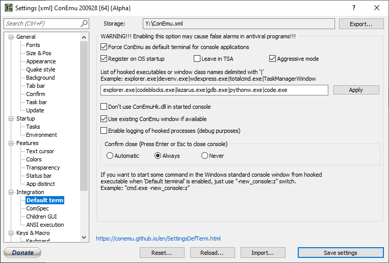

In fact, Windows does not provide official way to change default terminal application. That is because console subsystem is a part of Windows kernel (csrss.exe up to Vista and conhost.exe in Windows 7 and higher).
Only use of hacking methods can ‘change’ default Windows terminal application. And ConEmu can do it!
WARNING! Enabling ‘Default terminal’ feature may cause false alarms in some antiviral programs!
ConEmu build 121124 introduced unique feature: ‘Replace default Windows terminal’.

Just turn on checkbox ‘Force ConEmu as default terminal for console applications’, optionally turn on checkbox ‘Register on OS startup’ and point ‘parent’ applications from you like to start console tools (for example explorer.exe|devenv.exe|totalcmd.exe) and voila. You may press Win+R type ipconfig /all and press Enter. It will starts in the new ConEmu tab.
When you run console application from specified ‘parent’ application, your console application will be started in the new ConEmu tab.
The only exception - consoles started ‘As administrator’ can't be hooked yet.
Note! To ensure that your console application will be seized, run ConEmu before starting your consoles or debugging processes (from Visual Studio for example). However, that may be not required if you choose ‘Register on OS startup’. But in fact, ‘registering’ will affect, in most cases, only explorer.exe ‘parent’ process. So, recommendation is ‘run ConEmu before...’
‘Default terminal’ feature is more powerful than ‘Automatic attach of cmd’ (‘ComSpec’ page). ‘Default terminal’ can seize starting of any console program, not only cmd.exe. For example, you may dblclick on ipconfig.exe in Total Commander panel and voila... Also there will be no flickering of real console window.
Settings page wiki: Default term.
The only real way to ‘change’ default Windows terminal:
Looks simple, right? But who can perform these actions?
ConEmuHk (ConEmuHk.dll or ConEmuHk64.dll) must be loaded into process space of ‘parent’ application from which you are starting new console application: Explorer (explorer.exe), Task manager (taskmgr.exe), Visual Studio (devenv.exe or WDExpress.exe), and so on...
When ConEmuHk is loaded into ‘parent’ application it will hook limited set of Windows API functions related to creating new processes. So, when you start console application from shortcut, Win+R or even from Visual Studio debugger, ConEmuHk will change application startup procedure to the described above.
Actually, startup procedure slightly differs when you start debugging session.
To avoid flickering of RealConsole window ConEmuHk will change command line.
When you run "cmd" from Win+R and no ConEmu instance was runned:
ConEmu.exe /single /cmd -new_console:n "C:\Windows\system32\cmd.exe"
And when ConEmu window already exists:
ConEmuC64.exe [many internal switched] /HIDE /NOCONFIRM /ROOT "C:\Windows\system32\cmd.exe"
That is safe because ‘parent’ does not really need to get started process handle (cmd.exe in example).
When you start Visual Studio debugger of your ‘ConAppSample’, ‘parent’ process (devenv.exe or WDExpress.exe) need to get the handle of your ‘ConAppSample.exe’ to be able to call debugging routines.
That is why RealConsole window will flickers on screen before alternative attach procedure completes.
Note, when you are debugging .Net console application, Visual Studio will run ‘ConAppSample.vshost.exe’, if option ‘Enable the Visual Studio hosting process’ is checked in your project Properties\Debug.